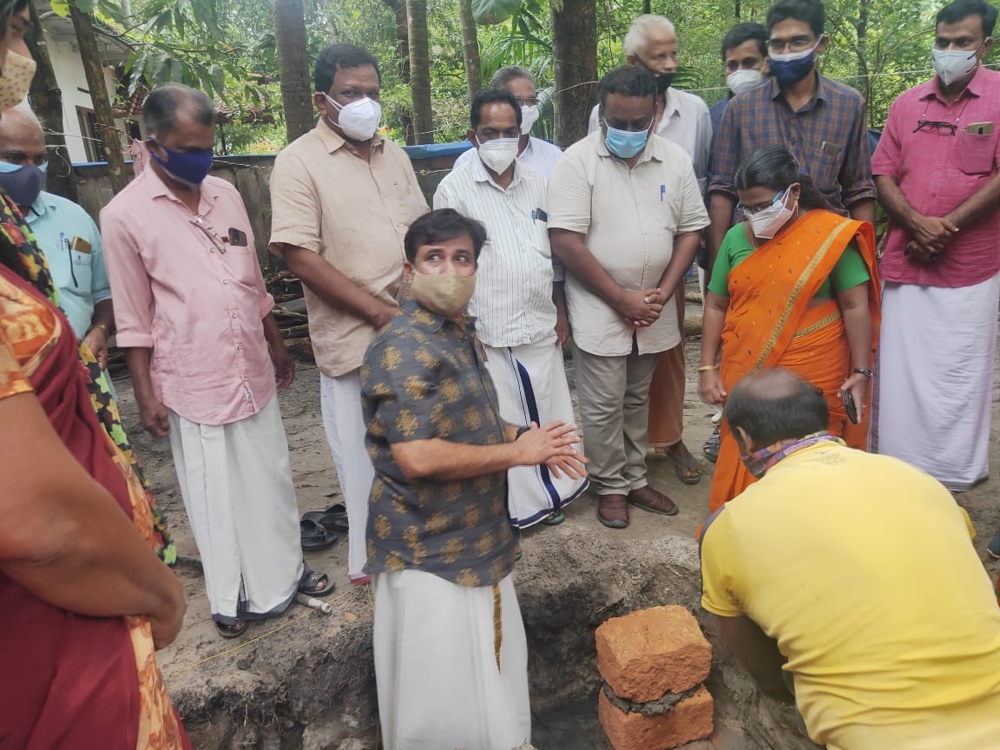
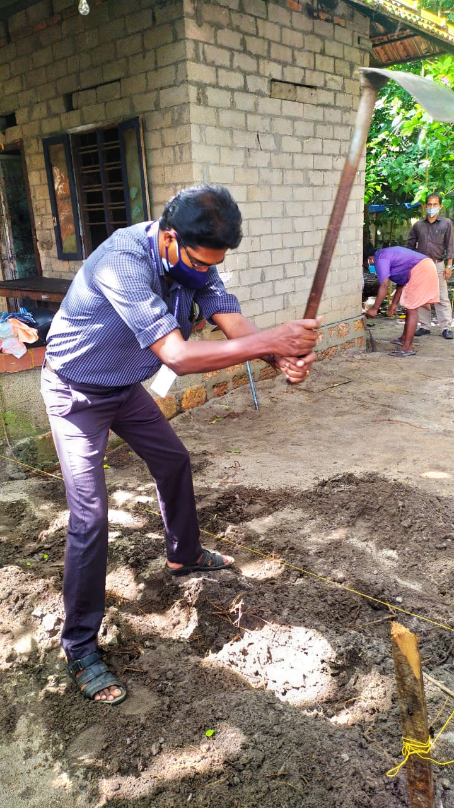
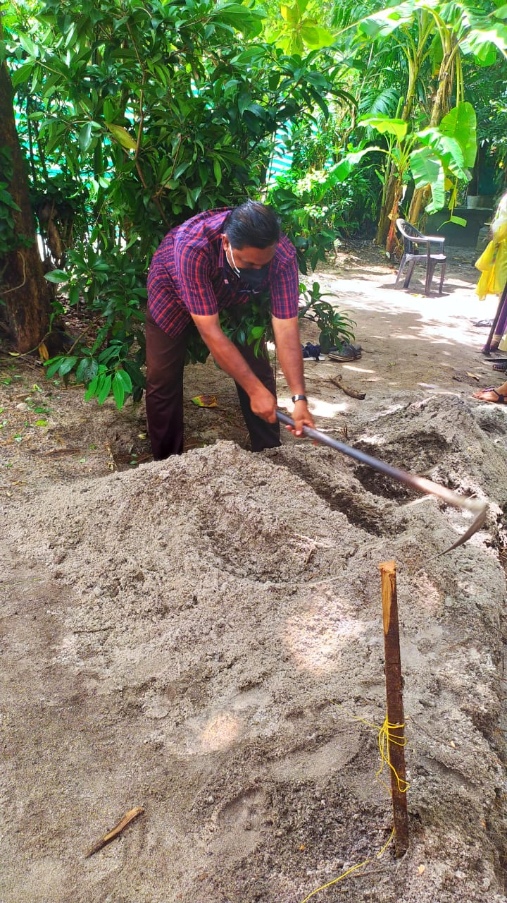
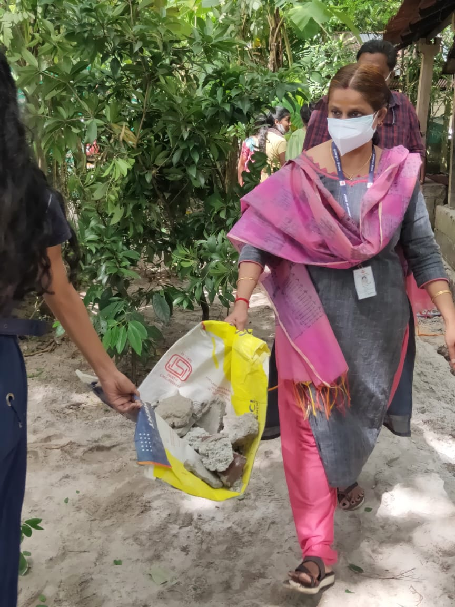
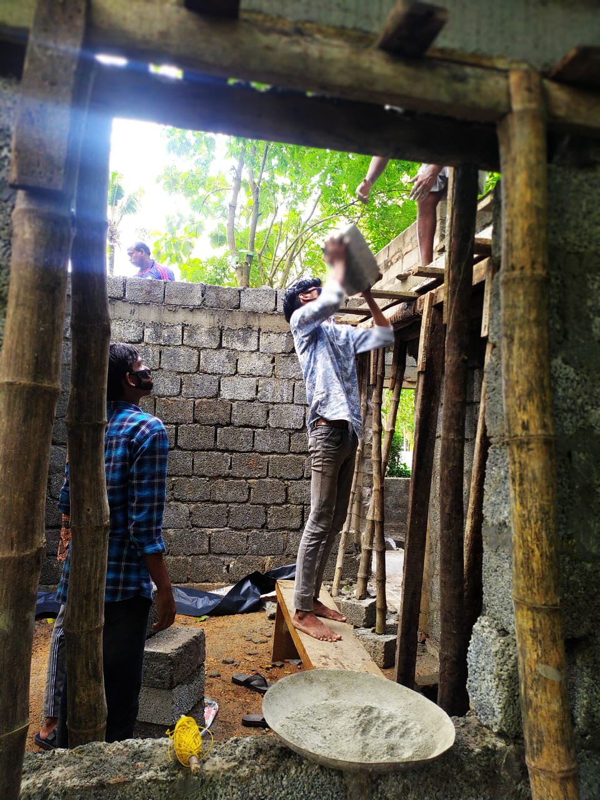

On September 24, 1969, the then Union Education Minister Dr. V.K.R.V. Rao, launched the NSS programme
in 37 universities covering all States and
simultaneously requested the Chief Ministers of States for their cooperation and help.
"NOT ME BUT YOU"
The Motto of NSS "Not Me But You", reflects the essence of democratic living and upholds the need for self-less service. NSS helps the students development & appreciation to other person's point of view and also show consideration towards other living beings
There are two types of activities: Regular Activities(120 hours) and Annual Special Camp(120 hours). All the NSS Volunteers who have served NSS for at least 2 years and have performed 240 hours of work under NSS are entitled to a certificate from the university under the signature of the Vice-Chancellor and the Programme Coordinator. The Annual camps are known as Special Camps. Camps are held annually, funded by the government of India, and are usually located in a rural village or a city suburb. Volunteers may be involved in such activities as:
NSS was started in November 2018 in Govt. H.S.S Thanneermukkom(Unit NO.NSS/SFU).According to the
NSS manual, we work around three areas.Regular Activities,Campus Work and Community Work.Our unit organizes
different types of activities.By the activities of NSS we were able to change the entire school to a correct
direction.
We can't forget the role of NSS in the campus.Behind every outstanding performances,NSS had been the
driving force.
NSS volunteers constructed a sneha veedu for the NSS volenteer Krishna Priya.
( 2019-2021 batch).

   
The total cost of this house was 9.5 lakhs.
On 24-02-2021 organized swagatha sagam. Grama panchayat mem, District panchayath member were present
in the metting. On 15-03-2021 campus were distributed according volunteers and they collected funds
keeping in mind corona protocol.
On 06-07 2021 sneha veedu foundation work started. Principal p jayal sir inaugurated the function.
Volunteers teachers PTA members and former NSS volunteers were also present in the function stood
the true value of dignity of work
Greenary in our school campus is the work done a feel of nature.During the year 2020-22 in the school campus gardens were setup. Lets go through the various phases.On enviorment day,plants were planted in front of each classroom.Flower pots were painted and bougainvilla was purchased and planted on it. More plants were purchased and gardens were made beautiful.Based on the project back to school, gardens were made more beautiful and flower pots were painted.During 7 days campus was flourished with grass to make lawn,which made the campus more attractive and greenary
Blood donation is a great act of kindness,many were done during blood donation campaign
On 6-2-2019 based on the blood donation campaign,volenteers were given orientation
class.The main aim to conduct orientation was to find donors.All kerala blood donors society (KEBS)
organising secretary Sri.Baiju Nellimoodu conducted the class.Mr Baiju who had donated blood more than
hundred times,class was very informative
To enhance the result of the school many innovative programmes weare conducted during the period 10-02-2022 to 15-03-2022 Eevening classes were conducted State level project "Thelima' focus area notes were given to students Based on it was very useful Evening classes were from 4.30pm to 6.30pm. First 1 30 hrs were spent to teach Thelima' focus area notes. And students were asked to write without looking into there books First year volunteers prepared refreshment to these students.
On 24-09-2020 the NSS day, NSS volenteers organised a Nirtha Silpam.It was all organised taking the fill consideration of Covid protocol.And This Nirtha Silpam was circulated to class Whatsapp groups.It gave tremendous energy to the students.
During school examination and school admission NSS volunteers worked as help desk.The were able to work the project of Break the Chain campaign.Break the Chain was done effectively.
On 01-11-2020 in the state level a programme was conducted all the volunteers in there house should a
I am Josukutty Johnson.I'm a NSS volunteer in Thannermukkom higher secondary school.What i've to say about NSS ,i'm glad that i could be a part of it.The NSS unit have brought many drastic changes in my life.The changes that have come to me since joining the NSS was very huge.Everything was changed in my life.My actions and thoughts have chnged a lot since i joined NSS.I've learnt to consider the opinions of others.I was afraid to talk infront of others.I didn't have the confidence to walk up on a stage.But NSS gave me the confidence i needed.we've done a lot of regular works like,banana tree plantation,farming,gardening, green space etc.I got the confidence that i'm able to do all these things.I've faced a lot of teasing since i joined NSS but i don't care at all because NSS made me who I'm today.A man with a heart filled with valuable memories and a mind filled with self confidence and joy.I'm very proud that we were able to build a house for one of our senior.Apart from the limitations during the pandemic i took part in building houses.I still recall the excitement i'd the next day.NSS helped me to come out of the loneliness that had been brought by the pandemic.As a leader i was able to ensure the participation of every individual and took part in all the works.I never knew that i'd a leader inside me,NSS helped me to build a leadership quality.
This school is in the path of its development.Various activities are conducted in the school to upgrade the academic status of the school.I am immenesely proud of the activities conducted by the NSS unit for the overall development of the school.Actually NSS becomed the inevitable part of the school.The garden and its maintainence requires daily attention.It is beautifully maintained by the NSS volenteers with higher responsibility. "Sahapadikoru Veedu" project was successfully completed and this enebled NSS to get a remarkable posotion in the society. I have a strong conviction that the volenteers would become promising human beings in the society.And also I would say that these volenteers will never fail in their life as they accquire ample personality development skills through the various activities of the NSS unit.I am proud of being the Principal of this school where this NSS unit is functioning.